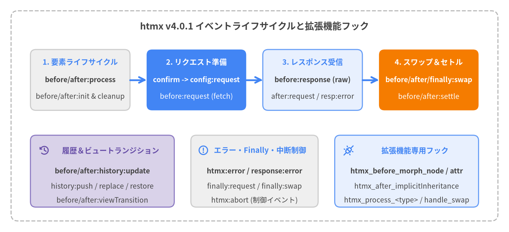

イベント＆拡張機能フック リファレンス
htmx v4.0.1 では、すべての DOM ライフサイクルイベントがコロン区切りの htmx:phase:action 命名規則に統一されました（htmx 2 の htmx:afterSwap のようなキャメルケース名は廃止されました）。各 DOM イベントは htmx.trigger() によってキャンセル可能かつ Shadow DOM 境界を越える CustomEvent として発火されると同時に、登録済みの拡張機能（Extension）に対してアンダースコア区切りのフック名（htmx_phase_action）でも通知されます。さらに、DOM イベントを発火せず拡張機能のみに通知される 5 つの専用フックも提供されています。

Source Code
from drawlib.canvas import save, setup
from drawlib.icons import phosphor
from drawlib.lines import line
from drawlib.shapes import rectangle
from drawlib.styles import Styles
from drawlib.text import text
setup(width=184, height=84, dpi=150)
# Outer container
rectangle((92, 42), width=176, height=76, style=Styles.MutedDashed.patch(shape_r=2.5))
text(
(92, 74.5),
"htmx v4.0.1 イベントライフサイクルと拡張機能フック",
style=Styles.DarkBold.patch(text_size=13.0),
)
# Top Row: 4 Sequential Lifecycle Stages
rectangle((29, 55), width=36, height=22, style=Styles.Neutral.patch(shape_r=2.0))
text((29, 61.5), "1. 要素ライフサイクル", style=Styles.PrimaryBold.patch(text_size=10.5))
text((29, 55.0), "before/after:process", style=Styles.DarkBold.patch(text_size=10.0))
text((29, 49.0), "before/after:init & cleanup", style=Styles.Dark.patch(text_size=10.0))
line((47, 55), (53, 55), arrow_head="->", style=Styles.PrimaryBold)
rectangle((71, 55), width=36, height=22, style=Styles.PrimaryFlat.patch(shape_r=2.0))
text((71, 61.5), "2. リクエスト準備", style=Styles.WhiteBold.patch(text_size=10.5))
text((71, 55.0), "confirm -> config:request", style=Styles.WhiteBold.patch(text_size=10.0))
text((71, 49.0), "before:request (fetch)", style=Styles.White.patch(text_size=10.0))
line((89, 55), (95, 55), arrow_head="->", style=Styles.PrimaryBold)
rectangle((113, 55), width=36, height=22, style=Styles.PrimaryNeutral.patch(shape_r=2.0))
text((113, 61.5), "3. レスポンス受信", style=Styles.PrimaryBold.patch(text_size=10.5))
text((113, 55.0), "before:response (raw)", style=Styles.DarkBold.patch(text_size=10.0))
text((113, 49.0), "after:request / resp:error", style=Styles.Dark.patch(text_size=10.0))
line((131, 55), (137, 55), arrow_head="->", style=Styles.PrimaryBold)
rectangle((155, 55), width=36, height=22, style=Styles.AccentFlat.patch(shape_r=2.0))
text((155, 61.5), "4. スワップ＆セトル", style=Styles.WhiteBold.patch(text_size=10.5))
text((155, 55.0), "before/after/finally:swap", style=Styles.WhiteBold.patch(text_size=10.0))
text((155, 49.0), "before/after:settle", style=Styles.White.patch(text_size=10.0))
# Bottom Row: 3 Specialized Event & Hook Channels
rectangle((37, 22), width=52, height=26, style=Styles.SecondaryNeutral.patch(shape_r=2.0))
phosphor.clock_counter_clockwise((16, 29.5), width=4.0, style=Styles.SecondaryBold)
text((40, 29.5), "履歴＆ビュートランジション", style=Styles.SecondaryBold.patch(text_size=10.5))
text((37, 22.0), "before/after:history:update", style=Styles.DarkBold.patch(text_size=10.0))
text((37, 16.5), "history:push / replace / restore", style=Styles.Dark.patch(text_size=10.0))
text((37, 11.5), "before/after:viewTransition", style=Styles.Dark.patch(text_size=10.0))
rectangle((92, 22), width=46, height=26, style=Styles.Neutral.patch(shape_r=2.0))
phosphor.warning_circle((73.5, 29.5), width=4.0, style=Styles.PrimaryBold)
text((94, 29.5), "エラー・Finally・中断制御", style=Styles.PrimaryBold.patch(text_size=10.5))
text((92, 22.0), "htmx:error / response:error", style=Styles.DarkBold.patch(text_size=10.0))
text((92, 16.5), "finally:request / finally:swap", style=Styles.Dark.patch(text_size=10.0))
text((92, 11.5), "htmx:abort (制御イベント)", style=Styles.Dark.patch(text_size=10.0))
rectangle((147, 22), width=52, height=26, style=Styles.PrimaryNeutral.patch(shape_r=2.0))
phosphor.plugs_connected((126, 29.5), width=4.0, style=Styles.PrimaryBold)
text((150, 29.5), "拡張機能専用フック", style=Styles.PrimaryBold.patch(text_size=10.5))
text((147, 22.0), "htmx_before_morph_node / attr", style=Styles.DarkBold.patch(text_size=10.0))
text((147, 16.5), "htmx_after_implicitInheritance", style=Styles.Dark.patch(text_size=10.0))
text((147, 11.5), "htmx_process_<type> / handle_swap", style=Styles.Dark.patch(text_size=10.0))
save()
イベント＆拡張機能フック一覧#
| イベント / フック | カテゴリ | キャンセル可否 | evt.detail ペイロード / シグネチャ |
|---|---|---|---|
htmx:before:process |
要素ライフサイクル | 可 | {} (Record<string, never>) |
htmx:after:process |
要素ライフサイクル | 不可 | {} (Record<string, never>) |
htmx:before:init |
要素ライフサイクル | 可 | {} (Record<string, never>) |
htmx:after:init |
要素ライフサイクル | 不可 | {} (Record<string, never>) |
htmx:before:cleanup |
要素ライフサイクル | 不可 | {} (Record<string, never>) |
htmx:after:cleanup |
要素ライフサイクル | 不可 | {} (Record<string, never>) |
htmx:before:on:init |
要素ライフサイクル | 可 | {} (Record<string, never>) |
htmx:confirm |
リクエストライフサイクル | 可 | { ctx, issueRequest, dropRequest } |
htmx:config:request |
リクエストライフサイクル | 可 | { ctx: HtmxRequestCtx } |
htmx:before:request |
リクエストライフサイクル | 可 | { ctx: HtmxRequestCtx } |
htmx:before:response |
リクエストライフサイクル | 可 | { ctx: HtmxRequestCtx } |
htmx:after:request |
リクエストライフサイクル | 可 | { ctx: HtmxRequestCtx } |
htmx:finally:request |
リクエストライフサイクル | 不可 | { ctx: HtmxRequestCtx } |
htmx:error |
リクエストライフサイクル | 不可 | { ctx?: HtmxRequestCtx, error: unknown } |
htmx:response:error |
リクエストライフサイクル | 不可 | { ctx: HtmxRequestCtx } |
htmx:abort |
リクエストライフサイクル（制御） | — | htmx.trigger(elt, 'htmx:abort') で送信 |
htmx:before:swap |
スワップ＆セトル | 可 | { ctx: HtmxRequestCtx, tasks: any[] } |
htmx:after:swap |
スワップ＆セトル | 不可 | { ctx: HtmxRequestCtx } |
htmx:finally:swap |
スワップ＆セトル | 不可 | { ctx: HtmxRequestCtx } |
htmx:before:settle |
スワップ＆セトル | 不可 | { task, newContent: ChildNode[], settleTasks: any[] } |
htmx:after:settle |
スワップ＆セトル | 不可 | { task, newContent: ChildNode[], settleTasks: any[] } |
htmx:process:partial |
スワップ＆セトル | 不可 | { ctx: any, tasks: any[] } |
htmx:before:history:update |
履歴＆ビュートランジション | 可 | { history: HtmxHistoryDetail, sourceElement, response } |
htmx:after:history:update |
履歴＆ビュートランジション | 不可 | { history: HtmxHistoryDetail, sourceElement, response } |
htmx:after:history:push |
履歴＆ビュートランジション | 不可 | { path: string } |
htmx:after:history:replace |
履歴＆ビュートランジション | 不可 | { path: string } |
htmx:before:history:restore |
履歴＆ビュートランジション | 可 | { path: string, cacheMiss: boolean } |
htmx:before:viewTransition |
履歴＆ビュートランジション | 不可（detail.task 変更可） |
{ task: () => Promise<void>, ctx?: HtmxRequestCtx } |
htmx:after:viewTransition |
履歴＆ビュートランジション | 不可 | { task: () => Promise<void>, ctx?: HtmxRequestCtx } |
htmx_before_morph_node |
拡張機能専用フック | 可（return false） |
(elt, { oldNode, newNode }) => boolean | void |
htmx_before_morph_attr |
拡張機能専用フック | 可（return false） |
(elt, { attrName, newValue }) => boolean | void |
htmx_after_implicitInheritance |
拡張機能専用フック | 不可 | (elt, { elt, name, parent }) => void |
htmx_process_<type> |
拡張機能専用フック | 不可 | (templateElt, { ctx, tasks }) => void |
handle_swap |
拡張機能専用フック | — | (swapStyle, target, fragment, swapSpec) => boolean | Node[] |
要素ライフサイクルイベント#
htmx:before:process#
htmx.process(root, force) の開始時（force 指定時のクリーンアップおよび [hx-ignore] 判定の直後）、root とその子孫要素に対して hx-on*、アクション属性（hx-get, hx-post 等）、および hx-boost の走査を開始する前に root 上で発火します。evt.preventDefault() を呼ぶ（または拡張機能の htmx_before_process で false を返す）と、そのサブツリー全体の処理を中断できます。
TypeScript シグネチャ
'htmx:before:process': Record<string, never>;
イベント仕様
| 項目 | 内容 |
|---|---|
| 発火対象（target） | root（htmx.process() に渡された Element） |
| バブリング / Composed | true / true |
| キャンセル可否 | 可 — root および子孫の hx-on*、アクション属性、hx-boost 初期化をすべてスキップします。 |
| 拡張機能フック | htmx_before_process(elt, detail) |
使用例
// 特定のカスタム属性を持つレガシーウィジェット配下の htmx 処理をスキップ
htmx.on('htmx:before:process', (evt) => {
if (evt.target.hasAttribute('data-legacy-widget')) {
evt.preventDefault();
}
});
htmx:after:process#
htmx.process(root, force) の最後、サブツリー内のすべての hx-on* ハンドラ、アクション属性、hx-boost 要素の初期化が完了した直後に root 上で発火します。htmx.onLoad(callback) はこのイベントのラッパーです。
TypeScript シグネチャ
'htmx:after:process': Record<string, never>;
イベント仕様
| 項目 | 内容 |
|---|---|
| 発火対象（target） | root（htmx.process() に渡された Element） |
| バブリング / Composed | true / true |
| キャンセル可否 | 不可（すでに処理完了済みのため） |
| 拡張機能フック | htmx_after_process(elt, detail) |
使用例
htmx.on('htmx:after:process', (evt) => {
console.log('サブツリーの処理が完了しました:', evt.target);
});
htmx:before:init#
アクション属性（hx-get, hx-post, hx-put, hx-patch, hx-delete, hx-query, hx-action）または hx-boost を持つ各要素において、elt._htmx メタデータの作成、data-htmx-powered="true" の付与、およびトリガーリスナーの登録が行われる直前に発火します。evt.preventDefault() を呼ぶとその要素の初期化を抑止できます。
TypeScript シグネチャ
'htmx:before:init': Record<string, never>;
イベント仕様
| 項目 | 内容 |
|---|---|
| 発火対象（target） | 初期化される個別の Element |
| バブリング / Composed | true / true |
| キャンセル可否 | 可 — その要素への elt._htmx 作成およびイベントリスナー登録を中止します。 |
| 拡張機能フック | htmx_before_init(elt, detail) |
使用例
htmx.on('htmx:before:init', (evt) => {
if (evt.target.matches('.readonly-mode [hx-post], .readonly-mode [hx-delete]')) {
evt.preventDefault();
}
});
htmx:after:init#
各要素に elt._htmx と data-htmx-powered="true" が設定され、すべての hx-trigger リスナーの登録が完了した直後に発火します。拡張機能では htmx_after_init(elt, detail) を実装して独自のカスタム hx-* 属性を初期化するパターンが標準的です。
TypeScript シグネチャ
'htmx:after:init': Record<string, never>;
イベント仕様
| 項目 | 内容 |
|---|---|
| 発火対象（target） | 初期化が完了した Element |
| バブリング / Composed | true / true |
| キャンセル可否 | 不可 |
| 拡張機能フック | htmx_after_init(elt, detail) |
使用例
// 拡張機能フックで要素のカスタム属性を読み取って初期化
htmx.registerExtension('tooltip-init', {
htmx_after_init(elt) {
if (elt.hasAttribute('hx-tooltip')) {
elt.setAttribute('title', elt.getAttribute('hx-tooltip'));
}
}
});
htmx:before:cleanup#
__cleanup() 内で、[data-htmx-powered] を持つ要素からポーリング用インターバル、デバウンス/スロットル用タイマー、IntersectionObserver、およびイベントリスナーを解除する直前に発火します。スワップによる要素削除・置換の直前や htmx.process(root, true) による強制再初期化時に呼ばれます。
TypeScript シグネチャ
'htmx:before:cleanup': Record<string, never>;
イベント仕様
| 項目 | 内容 |
|---|---|
| 発火対象（target） | クリーンアップ対象の Element |
| バブリング / Composed | true / true |
| キャンセル可否 | 不可 |
| 拡張機能フック | htmx_before_cleanup(elt, detail) |
使用例
// 拡張機能が elt._htmx に保持したリソースをクリーンアップ
htmx.registerExtension('custom-stream', {
htmx_before_cleanup(elt) {
elt._htmx?.customSocket?.close();
}
});
htmx:after:cleanup#
__cleanup() 内で、要素のすべての内部タイマー、オブザーバー、イベントリスナーが解除され、data-htmx-powered 属性が削除された直後に発火します。
TypeScript シグネチャ
'htmx:after:cleanup': Record<string, never>;
イベント仕様
| 項目 | 内容 |
|---|---|
| 発火対象（target） | クリーンアップが完了した Element |
| バブリング / Composed | true / true |
| キャンセル可否 | 不可 |
| 拡張機能フック | htmx_after_cleanup(elt, detail) |
使用例
htmx.on('htmx:after:cleanup', (evt) => {
console.debug('要素のクリーンアップが完了しました:', evt.target);
});
htmx:before:on:init#
htmx.process() 内で、hx-on* 属性（hx-on:click, hx-on::after:swap, hx-on="..."）を持つ要素に対してインラインイベントハンドラを解析・登録する直前に発火します。evt.preventDefault() を呼ぶと、その要素の hx-on* ハンドラ登録を防止できます。
TypeScript シグネチャ
'htmx:before:on:init': Record<string, never>;
イベント仕様
| 項目 | 内容 |
|---|---|
| 発火対象（target） | hx-on* 属性を持つ Element |
| バブリング / Composed | true / true |
| キャンセル可否 | 可 — その要素に対する __handleHxOnAttributes(node) をスキップします。 |
| 拡張機能フック | htmx_before_on_init(elt, detail) |
使用例
// 信頼できないプレビュー領域内の hx-on インラインハンドラ登録をブロック
htmx.on('htmx:before:on:init', (evt) => {
if (evt.target.closest('.untrusted-preview')) {
evt.preventDefault();
}
});
リクエストライフサイクルイベント#
htmx:confirm#
sourceElement に hx-confirm（ctx.confirm）が設定されている場合、__issueRequest(ctx) 内でインジケータ表示やタイムアウト開始、fetch() 実行の前に発火します。evt.preventDefault() を呼ぶと標準の window.confirm() ダイアログ（または js: 式の評価）を抑止して非同期のカスタム確認モーダルを表示できます。確認完了後、続行する場合は evt.detail.issueRequest()、中止する場合は evt.detail.dropRequest() を必ず呼び出してください。
TypeScript シグネチャ
'htmx:confirm': {
ctx: HtmxRequestCtx;
/** Call to proceed with the request */
issueRequest: () => void;
/** Call to cancel the request */
dropRequest: () => void;
};
Detail ペイロード
| プロパティ | 型 | 説明 |
|---|---|---|
ctx |
HtmxRequestCtx |
リクエストコンテキスト（ctx.confirm に hx-confirm の文字列が格納されています）。 |
issueRequest |
() => void |
確認 Promise を true で解決し、リクエスト送信を続行します。 |
dropRequest |
() => void |
確認 Promise を false で解決し、fetch() を実行せずに終了します。 |
使用例
// 標準の window.confirm() をカスタム非同期 <dialog> に置き換え
htmx.on('htmx:confirm', (evt) => {
const { ctx, issueRequest, dropRequest } = evt.detail;
evt.preventDefault(); // デフォルトの window.confirm() を抑止
showCustomDialog(ctx.confirm).then((confirmed) => {
if (confirmed) issueRequest();
else dropRequest();
});
});
htmx:config:request#
フォーム値、hx-include、hx-vals、および hx-headers が収集されて ctx.request.body（FormData）と ctx.request.headers に格納された直後、かつ GET/DELETE の URL クエリ変換や URLSearchParams エンコード、および hx-sync キュー投入の前に発火します。リクエストヘッダやボディ、送信先 URL をカスタマイズするためのメインフックです。evt.preventDefault() を呼ぶとキュー投入前にリクエストを中止できます。
TypeScript シグネチャ
'htmx:config:request': { ctx: HtmxRequestCtx };
Detail ペイロード
| プロパティ | 型 | 説明 |
|---|---|---|
ctx |
HtmxRequestCtx |
ctx.request.body が変更可能な FormData インスタンスであり、ctx.request.headers がプレーンオブジェクトの状態のリクエストコンテキスト。 |
使用例
htmx.on('htmx:config:request', (evt) => {
const { request } = evt.detail.ctx;
request.headers['Authorization'] = `Bearer ${getAuthToken()}`;
if (request.body instanceof FormData) {
request.body.append('locale', document.documentElement.lang || 'ja');
}
});
htmx:before:request#
hx-sync キューの通過、htmx:confirm の承認、タイムアウトタイマーの設定、htmx-request インジケータの有効化、hx-disable 要素の無効化、および HX-Request-Type ヘッダ（"full" または "partial"）の設定が完了し、ctx.fetch(ctx.request.action, ctx.request) が呼び出される直前に発火します。ここで evt.preventDefault() を呼ぶと fetch() の送信を中止しつつ、finally ブロックのクリーンアップ（htmx:finally:request、インジケータ非表示、無効化解除）は確実に実行されます。
TypeScript シグネチャ
'htmx:before:request': { ctx: HtmxRequestCtx };
Detail ペイロード
| プロパティ | 型 | 説明 |
|---|---|---|
ctx |
HtmxRequestCtx |
ctx.fetch() 実行直前の確定済みリクエストコンテキスト。拡張機能で ctx.fetch を差し替えることも可能です。 |
使用例
htmx.on('htmx:before:request', (evt) => {
console.info(`Sending ${evt.detail.ctx.request.method} to ${evt.detail.ctx.request.action}`);
});
htmx:before:response#
await ctx.fetch(...) が解決し、HX-* レスポンスヘッダが ctx.hx に抽出された直後、かつ htmx が await response.text() でレスポンスボディを読み取る前に発火します。この時点では ctx.response.raw は未消費のネイティブ Fetch Response です。evt.preventDefault() を呼ぶと response.text() の読み取りとスワップをスキップできるため、hx-multipart や hx-download のように ctx.response.raw.body ストリームを直接処理する拡張機能で使用されます。
TypeScript シグネチャ
'htmx:before:response': { ctx: HtmxRequestCtx };
Detail ペイロード
| プロパティ | 型 | 説明 |
|---|---|---|
ctx |
HtmxRequestCtx |
ボディ読み取り前の ctx.response（{ raw, status, headers }）と ctx.hx（解析済み HX-* ヘッダ）を持つコンテキスト。 |
使用例
// response.text() が呼ばれる前に multipart ストリームを横取りして処理
htmx.on('htmx:before:response', (evt) => {
const { ctx } = evt.detail;
if (ctx.response?.headers.get('Content-Type')?.startsWith('multipart/mixed')) {
evt.preventDefault();
ctx.extensionPromise = consumeMultipartStream(ctx.response.raw);
}
});
htmx:after:request#
ctx.text = await response.text() によるボディ読み取りが完了した直後、htmx:response:error（HTTP >= 400 の場合）や HX-Refresh / HX-Redirect / HX-Location ヘッダ処理、および htmx.swap(ctx) が実行される前に発火します。スワップ前に ctx.text を検査・書き換えたり、evt.preventDefault() で後続のスワップ処理をキャンセルできます。
TypeScript シグネチャ
'htmx:after:request': { ctx: HtmxRequestCtx };
Detail ペイロード
| プロパティ | 型 | 説明 |
|---|---|---|
ctx |
HtmxRequestCtx |
ctx.response と読み取り済みの ctx.text（レスポンス HTML 文字列）が格納されたリクエストコンテキスト。 |
使用例
htmx.on('htmx:after:request', (evt) => {
const { ctx } = evt.detail;
console.log(`Status ${ctx.response?.status}: ${ctx.text?.length ?? 0} 文字を受信しました`);
});
htmx:finally:request#
__issueRequest(ctx) の finally ブロックにおいて、リクエストが正常完了・エラー失敗・タイムアウト・中断のいずれで終了した場合でも必ず発火します（ctx.extensionPromise の完了待機および HX-Trigger レスポンスヘッダ処理の後、インジケータ非表示や hx-disable 解除の直前に発火）。なお、htmx:config:request でのキャンセルや hx-sync によるドロップなど、__issueRequest に入る前に終了した場合は発火しません。
TypeScript シグネチャ
'htmx:finally:request': { ctx: HtmxRequestCtx };
Detail ペイロード
| プロパティ | 型 | 説明 |
|---|---|---|
ctx |
HtmxRequestCtx |
最終的な ctx.status（"swapped", "issuing", "error: ..." 等）を持つリクエストコンテキスト。 |
使用例
htmx.on('htmx:finally:request', (evt) => {
const { ctx } = evt.detail;
performance.mark(`htmx-end-${ctx.request.action}`);
});
htmx:error#
ネットワーク障害、リクエストタイムアウト（ctx.request.signal.reason === 'timeout'）、インライン式の評価例外、またはスワップ処理中の例外が発生した際に発火します（htmx 2 の htmx:sendError, htmx:swapError, htmx:timeout, htmx:targetError がこの htmx:error に統合されました）。なお、タイムアウト以外のユーザー中断（AbortError）では発火せず、HTTP 4xx/5xx エラーでは htmx:response:error が発火します。発火時は自動的に console.error にも出力されます。
TypeScript シグネチャ
'htmx:error': { ctx?: HtmxRequestCtx; error: unknown };
Detail ペイロード
| プロパティ | 型 | 説明 |
|---|---|---|
ctx |
HtmxRequestCtx | undefined |
リクエストまたはスワップ実行中に発生した場合は HtmxRequestCtx（hx-on 実行中やコンテキスト生成前の例外では undefined）。 |
error |
unknown |
スローされた Error、DOMException、またはタイムアウト理由。 |
使用例
htmx.on('htmx:error', (evt) => {
const { ctx, error } = evt.detail;
showToastNotification(`通信または実行時エラー: ${error?.message || error}`, 'error');
});
htmx:response:error#
サーバーが HTTP ステータスコード 400 以上（ctx.response.status >= 400）を返した際、htmx:after:request の直後に発火します。htmx v4 では、htmx.config.noSwap または hx-status:XXX="swap:none" で抑止しない限り、htmx:response:error 発火後もエラーレスポンスの HTML がそのままターゲットへスワップされます。
TypeScript シグネチャ
'htmx:response:error': { ctx: HtmxRequestCtx };
Detail ペイロード
| プロパティ | 型 | 説明 |
|---|---|---|
ctx |
HtmxRequestCtx |
ctx.response.status（>= 400）、ctx.response.headers、および ctx.text を保持するリクエストコンテキスト。 |
使用例
htmx.on('htmx:response:error', (evt) => {
const { status } = evt.detail.ctx.response;
if (status === 401) {
window.location.href = '/login';
}
});
htmx:abort#
要素上で進行中のリクエストを中断するために、htmx.trigger(elt, 'htmx:abort') で要素へ送信する**制御イベント（Control Event）**です。他の htmx:* イベントとは異なり、htmx が発火するのではなく、htmx 側がリスナーを登録して待ち受けます。
TypeScript シグネチャ
'htmx:abort': Record<string, never>;
制御イベント仕様
| 項目 | 内容 |
|---|---|
| 送信対象要素 | 現在リクエストを発行中の要素（または hx-sync で同期している親要素）。 |
| 発火方法 | htmx.trigger('#element-id', 'htmx:abort') |
| 動作 | requestQueue.abort() から ctx.request.abort() を呼び出します。中断理由が 'timeout' ではないため htmx:error は発火せず、htmx:finally:request が発火してインジケータ解除と次キューの実行が行われます。 |
使用例
<button id="report-btn" hx-get="/reports/heavy" hx-target="#output">
重い集計を実行
</button>
<button type="button" onclick="htmx.trigger('#report-btn', 'htmx:abort')">
集計をキャンセル
</button>
スワップ＆セトルイベント#
htmx:before:swap#
htmx.swap(ctx) 内で、レスポンス HTML のフラグメント解析および OOB（hx-swap-oob）、<hx-partial>、メインスワップの各タスク構築（tasks 配列）が完了した直後、かつブラウザ履歴の更新や DOM への挿入が行われる前に発火します。evt.detail.tasks を検査・変更したり、evt.preventDefault() を呼んでスワップと履歴更新をキャンセルできます。
TypeScript シグネチャ
'htmx:before:swap': { ctx: HtmxRequestCtx; tasks: any[] };
Detail ペイロード
| プロパティ | 型 | 説明 |
|---|---|---|
ctx |
HtmxRequestCtx |
スワップ・リクエストコンテキスト（抽出された ctx.title を含む）。 |
tasks |
Array<{ type: 'main' | 'oob' | 'partial', fragment: DocumentFragment, target: Element, swapSpec: object, sourceElement: Element }> |
実行予定のスワップタスク配列。 |
使用例
htmx.on('htmx:before:swap', (evt) => {
const { ctx, tasks } = evt.detail;
console.log(`${tasks.length} 件のスワップタスクを実行します:`, ctx.sourceElement);
});
htmx:after:swap#
すべてのスワップタスク（__insertContent）およびセトル処理が完了した直後、document.title の更新と #anchor スクロールが行われる前に ctx.sourceElement（スワップによって元要素が DOM から切り離された場合は mainSwap.target）上で発火します。
TypeScript シグネチャ
'htmx:after:swap': { ctx: HtmxRequestCtx };
Detail ペイロード
| プロパティ | 型 | 説明 |
|---|---|---|
ctx |
HtmxRequestCtx |
すべての DOM 挿入が完了した後のスワップ・リクエストコンテキスト。 |
使用例
<!-- ダブルコロン短縮記法 hx-on::after:swap でフォーム送信後にリセット -->
<form hx-post="/comments"
hx-target="#comment-list"
hx-swap="beforeend"
hx-on::after:swap="this.reset()">
<input name="body" required>
<button type="submit">投稿</button>
</form>
htmx:finally:swap#
htmx.swap(ctx) の finally ブロックにおいて、スワップが正常完了した場合、htmx:before:swap でキャンセルされた場合、または例外が発生した場合のいずれでも必ず発火します。
TypeScript シグネチャ
'htmx:finally:swap': { ctx: HtmxRequestCtx };
Detail ペイロード
| プロパティ | 型 | 説明 |
|---|---|---|
ctx |
HtmxRequestCtx |
htmx.swap() 終了時点のコンテキスト。 |
使用例
htmx.on('htmx:finally:swap', (evt) => {
unlockScrollPosition();
});
htmx:before:settle#
各スワップタスク（メイン、OOB、<hx-partial>）の __insertContent() 内において、新しい DOM ノードが挿入され [hx-preserve] 要素が復元された直後、かつ .htmx-added / .htmx-settling クラスの付与および CSS トランジション用 settleTasks の実行が行われる前に task.target 上で発火します。
TypeScript シグネチャ
'htmx:before:settle': {
task: any;
newContent: ChildNode[];
settleTasks: any[];
};
Detail ペイロード
| プロパティ | 型 | 説明 |
|---|---|---|
task |
object |
個別のスワップタスク（{ type, fragment, target, swapSpec, sourceElement }）。 |
newContent |
ChildNode[] |
task.target に新しく挿入された DOM ノードの配列。 |
settleTasks |
Array<() => void> |
settleDelay 経過後に属性を復元して CSS トランジションを起動するコールバック配列。 |
使用例
htmx.on('htmx:before:settle', (evt) => {
const { newContent } = evt.detail;
// CSS トランジションが開始される前に新規挿入ノードへ属性を付与
for (const node of newContent) {
if (node instanceof HTMLElement) {
node.dataset.insertedAt = String(Date.now());
}
}
});
htmx:after:settle#
セトル遅延（settle:<time> または htmx.config.defaultSettleDelay）が経過し、すべての settleTasks による属性復元（class, style, width, height）が完了した直後、.htmx-added の除去および newContent に対する htmx.process() 実行の直前に task.target 上で発火します。
TypeScript シグネチャ
'htmx:after:settle': {
task: any;
newContent: ChildNode[];
settleTasks: any[];
};
Detail ペイロード
| プロパティ | 型 | 説明 |
|---|---|---|
task |
object |
完了したスワップタスクオブジェクト。 |
newContent |
ChildNode[] |
新しく挿入された DOM ノードの配列。 |
settleTasks |
Array<() => void> |
実行完了した CSS トランジションコールバック配列。 |
使用例
htmx.on('htmx:after:settle', (evt) => {
console.log('セトルフェーズが完了しました:', evt.target);
});
htmx:process:partial#
レスポンス内の <hx-partial> テンプレート処理パターン（htmx:process:{type}）を表す組み込みの TypeScript イベント型定義です。src/htmx.js では標準の <hx-partial> 要素は __processPartials() 内でネイティブ処理され、<hx-mytype> や <template hx type="mytype">（type !== "partial"）は拡張機能フック htmx_process_<type> に { ctx, tasks } を渡して処理されます。
TypeScript シグネチャ
'htmx:process:partial': { ctx: any; tasks: any[] };
Detail ペイロード
| プロパティ | 型 | 説明 |
|---|---|---|
ctx |
HtmxRequestCtx |
現在のスワップ・リクエストコンテキスト。 |
tasks |
any[] |
実行されるスワップタスク配列。 |
使用例
<!-- htmx.swap() 中に自動処理される組み込みの <hx-partial> 要素 -->
<hx-partial hx-target="#sidebar-count" hx-swap="innerHTML">
<span class="badge">12</span>
</hx-partial>
履歴＆ビュートランジションイベント#
htmx:before:history:update#
__handleHistoryUpdate(ctx) 内で、history.pushState() または history.replaceState() が呼び出される直前に document 上で発火します。evt.detail.history.path や evt.detail.history.type を書き換えたり、evt.preventDefault() を呼んで履歴更新をキャンセルできます。
TypeScript シグネチャ
'htmx:before:history:update': {
history: HtmxHistoryDetail; // { type: 'push' | 'replace', path: string }
sourceElement: Element;
response: HtmxResponse;
};
Detail ペイロード
| プロパティ | 型 | 説明 |
|---|---|---|
history |
HtmxHistoryDetail |
{ type: 'push' | 'replace', path: string }。履歴 API 呼び出し前に変更可能です。 |
sourceElement |
Element |
リクエストまたはスワップの起点要素。 |
response |
HtmxResponse |
サーバーレスポンスオブジェクト（{ raw, status, headers }）。 |
使用例
// ブラウザ履歴に URL を記録する前に一時的なトラッキングパラメータを除去
htmx.on('htmx:before:history:update', (evt) => {
const url = new URL(evt.detail.history.path, location.origin);
url.searchParams.delete('_utm');
evt.detail.history.path = url.pathname + url.search + url.hash;
});
htmx:after:history:update#
history.pushState() または history.replaceState()（および対応する htmx:after:history:push / htmx:after:history:replace イベント）が完了した直後に document 上で発火します。
TypeScript シグネチャ
'htmx:after:history:update': {
history: HtmxHistoryDetail;
sourceElement: Element;
response: HtmxResponse;
};
Detail ペイロード
| プロパティ | 型 | 説明 |
|---|---|---|
history |
HtmxHistoryDetail |
window.history に反映された { type: 'push' | 'replace', path: string }。 |
sourceElement |
Element |
リクエストまたはスワップの起点要素。 |
response |
HtmxResponse |
サーバーレスポンスオブジェクト。 |
使用例
htmx.on('htmx:after:history:update', (evt) => {
analytics.pageView(evt.detail.history.path);
});
htmx:after:history:push#
history.pushState({ htmx: true }, '', path) によって新しいブラウザ履歴エントリが追加された直後に document 上で発火します。
TypeScript シグネチャ
'htmx:after:history:push': { path: string };
Detail ペイロード
| プロパティ | 型 | 説明 |
|---|---|---|
path |
string |
window.history に push された URL パス。 |
使用例
htmx.on('htmx:after:history:push', (evt) => {
console.log('履歴に URL を push しました:', evt.detail.path);
});
htmx:after:history:replace#
history.replaceState({ htmx: true }, '', path) によって現在のブラウザ履歴エントリが置換された直後に document 上で発火します。
TypeScript シグネチャ
'htmx:after:history:replace': { path: string };
Detail ペイロード
| プロパティ | 型 | 説明 |
|---|---|---|
path |
string |
window.history で置換された URL パス。 |
使用例
htmx.on('htmx:after:history:replace', (evt) => {
console.log('履歴の URL を置換しました:', evt.detail.path);
});
htmx:before:history:restore#
ユーザーがブラウザの戻る・進む操作（Navigation API の navigate イベントまたは popstate イベント）を行った際、htmx が [hx-history-elt] または document.body を AJAX で復元（または htmx.config.history === 'reload' 時にリロード）する直前に document 上で発火します。htmx コアからは常に cacheMiss: true で発火され、hx-history-cache 拡張機能などはこのイベントを捕捉して sessionStorage から復元し、evt.preventDefault()（または detail.cancelled = true）でネットワークリクエストをスキップします。
TypeScript シグネチャ
'htmx:before:history:restore': { path: string; cacheMiss: boolean };
Detail ペイロード
| プロパティ | 型 | 説明 |
|---|---|---|
path |
string |
復元対象の URL パス（location.pathname + location.search）。 |
cacheMiss |
boolean |
htmx コアから発火される際は常に true。 |
使用例
htmx.on('htmx:before:history:restore', (evt) => {
console.log('履歴を復元中:', evt.detail.path);
});
htmx:before:viewTransition#
View Transitions が有効なスワップ（htmx.config.transitions = true または hx-swap="... transition:true"）において、document.startViewTransition(detail.task) が呼び出される直前に ctx.sourceElement 上で発火します。evt.detail.task をラップして前後処理を挟むことも可能です。
TypeScript シグネチャ
'htmx:before:viewTransition': { task: () => Promise<void> };
Detail ペイロード
| プロパティ | 型 | 説明 |
|---|---|---|
task |
() => Promise<void> |
document.startViewTransition(detail.task) に渡される DOM 挿入用非同期関数。 |
ctx |
HtmxRequestCtx |
実行時のスワップ・リクエストコンテキスト（src/htmx.js 2308行目）。 |
使用例
htmx.on('htmx:before:viewTransition', (evt) => {
document.documentElement.classList.add('vt-active');
});
htmx:after:viewTransition#
await document.startViewTransition(detail.task).finished が完了した直後に ctx.sourceElement 上で発火します。
TypeScript シグネチャ
'htmx:after:viewTransition': { task: () => Promise<void> };
Detail ペイロード
| プロパティ | 型 | 説明 |
|---|---|---|
task |
() => Promise<void> |
実行が完了したトランジションタスク関数。 |
ctx |
HtmxRequestCtx |
実行時のスワップ・リクエストコンテキスト。 |
使用例
htmx.on('htmx:after:viewTransition', (evt) => {
document.documentElement.classList.remove('vt-active');
});
拡張機能専用フック#
以下の 5 つのフックは htmx.registerExtension() で登録された拡張機能に対してのみ内部呼び出し（__triggerExtensions() または __extMethods）され、DOM イベントとしては発火されません。
htmx_before_morph_node#
__morphNode(oldNode, newNode, ctx) 内において、htmx が newNode から oldNode へ属性コピーや子要素のモーフを行う直前に拡張機能へ通知されます。false を返す（または detail.cancelled = true を設定する）と、oldNode とその子孫のモーフ処理をスキップして既存 DOM ノードをそのまま保護できます。
フックシグネチャ
htmx_before_morph_node?: (
elt: Element,
detail: { oldNode: Element; newNode: Element; cancelled?: boolean }
) => boolean | void;
パラメータ
| パラメータ | 型 | 説明 |
|---|---|---|
elt |
Element |
モーフ対象の既存 DOM 要素（oldNode）。 |
detail.oldNode |
Element |
ドキュメント上の既存 DOM 要素。 |
detail.newNode |
Element |
新しいフラグメント側の対応要素。 |
| 戻り値 | boolean | void |
false を返す（または detail.cancelled = true）と oldNode のモーフをスキップします。 |
使用例
htmx.registerExtension('preserve-dirty-inputs', {
htmx_before_morph_node(elt, detail) {
if (detail.oldNode.matches('input[data-dirty="true"]')) {
return false; // ユーザーが編集中の input 要素をモーフ時に保護
}
}
});
htmx_before_morph_attr#
__copyAttributes(destination, source) 内において、個別の属性が destination 要素に設定（newValue: string）または削除（newValue: null）される直前に拡張機能へ通知されます。false を返すと、その属性の更新または削除だけをスキップできます。
フックシグネチャ
htmx_before_morph_attr?: (
elt: Element,
detail: { attrName: string; newValue: string | null; cancelled?: boolean }
) => boolean | void;
パラメータ
| パラメータ | 型 | 説明 |
|---|---|---|
elt |
Element |
属性が更新・削除される対象の既存 DOM 要素。 |
detail.attrName |
string |
対象の属性名。 |
detail.newValue |
string | null |
新しい属性値文字列（属性が削除される場合は null）。 |
| 戻り値 | boolean | void |
false を返すと elt の現在の属性値を維持します。 |
使用例
htmx.registerExtension('keep-aria-expanded', {
htmx_before_morph_attr(elt, { attrName }) {
if (attrName === 'aria-expanded' && elt.hasAttribute('data-client-controlled')) {
return false; // クライアント側で開閉制御している aria-expanded 属性を維持
}
}
});
htmx_after_implicitInheritance#
htmx.config.implicitInheritance が true に設定されている環境において、__attributeValue() が親要素から子要素へ hx-* 属性を暗黙継承した際に拡張機能へ通知されます。htmx 2 から htmx 4 の明示的継承（:inherited）へ移行する際の監査に役立ちます。
フックシグネチャ
htmx_after_implicitInheritance?: (
elt: Element,
detail: { elt: Element; name: string; parent: Element; cancelled?: boolean }
) => void;
パラメータ
| パラメータ | 型 | 説明 |
|---|---|---|
elt |
Element |
属性を継承した子要素。 |
detail.elt |
Element |
属性を継承した子要素。 |
detail.name |
string |
継承された属性名（例: "hx-target", "hx-swap"）。 |
detail.parent |
Element |
属性値を保持していた祖先要素。 |
使用例
// htmx 2 -> htmx 4 移行時に暗黙継承が発生している箇所を警告ログに出力
htmx.registerExtension('inheritance-audit', {
htmx_after_implicitInheritance(elt, { name, parent }) {
console.warn(`Implicitly inherited ${name} on`, elt, 'from', parent, `— 親要素に ${name}:inherited を追加してください`);
}
});
htmx_process_<type>#
__processPartials(fragment, ctx) において、type !== "partial" の <hx-type> タグ（__makeFragment() により <template hx type="<type>"> に変換されたもの）または <template hx type="<type>"> 要素が見つかった際に呼び出されます。hx-upsert.js（htmx_process_upsert）のように、独自のカスタムタグから detail.tasks へスワップタスクを追加するために使用されます。
フックシグネチャ
[hookName: `htmx_process_${string}`]: (
templateElt: HTMLTemplateElement,
detail: { ctx: HtmxRequestCtx; tasks: any[]; cancelled?: boolean }
) => void;
パラメータ
| パラメータ | 型 | 説明 |
|---|---|---|
templateElt |
HTMLTemplateElement |
レスポンスから抽出された <template hx type="<type>"> 要素（フック実行後に自動的に削除されます）。 |
detail.ctx |
HtmxRequestCtx |
現在のスワップ・リクエストコンテキスト。 |
detail.tasks |
any[] |
スワップタスク配列。{ type, fragment, target, swapSpec, sourceElement } を push することで DOM 挿入をスケジュールできます。 |
使用例
// サーバーレスポンス内の <hx-toast>...</hx-toast> タグをトースト領域へ追加
htmx.registerExtension('hx-toast', {
htmx_process_toast(templateElt, { ctx, tasks }) {
const container = document.querySelector('#toast-container');
if (container) {
tasks.push({
type: 'toast',
fragment: templateElt.content.cloneNode(true),
target: container,
swapSpec: { style: 'beforeend' },
sourceElement: ctx.sourceElement
});
}
}
});
handle_swap#
__insertContent(task) において、swapSpec.style が組み込みのスワップ方式（innerHTML, outerHTML, outerSync, innerMorph, outerMorph, textContent, beforebegin, afterbegin, beforeend, afterend, delete, none）のいずれにも一致しない場合に、登録済み拡張機能へ直接呼び出されます。hx-download（hx-swap="download"）や hx-upsert（hx-swap="upsert"）で使用されています。
フックシグネチャ
handle_swap?: (
swapStyle: string,
target: Element,
fragment: DocumentFragment,
swapSpec: Record<string, any>
) => boolean | Node[];
パラメータ
| パラメータ | 型 | 説明 |
|---|---|---|
swapStyle |
string |
正規化されたカスタムスワップ方式名（例: "upsert", "download"）。 |
target |
Element |
解決されたスワップ先 DOM 要素。 |
fragment |
DocumentFragment |
レスポンスノードを含む DocumentFragment。 |
swapSpec |
Record<string, any> |
HCON モディファイア（swap, settle, scroll 等）を含むスワップ指定オブジェクト。 |
| 戻り値 | boolean | Node[] |
この拡張機能が対象外の場合は false を返します。処理した場合は true、または挿入した Node[] 配列を返すと、それらのノードに対して .htmx-added 付与、htmx.process()、および autofocus 処理が自動実行されます。 |
使用例
// カスタムスワップ方式: hx-swap="replace-first"
htmx.registerExtension('replace-first-swap', {
handle_swap(swapStyle, target, fragment, swapSpec) {
if (swapStyle !== 'replace-first') return false;
const inserted = [...fragment.childNodes];
if (target.firstElementChild) {
target.firstElementChild.replaceWith(fragment);
} else {
target.append(fragment);
}
return inserted;
}
});